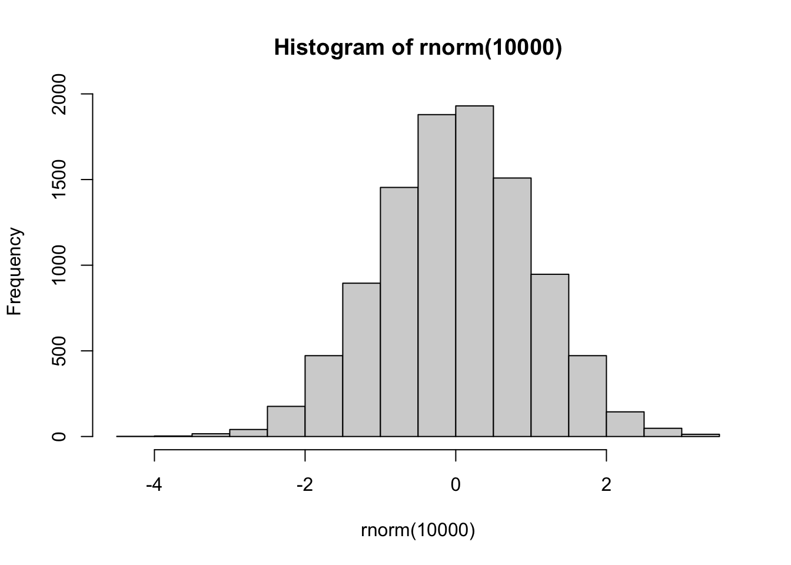
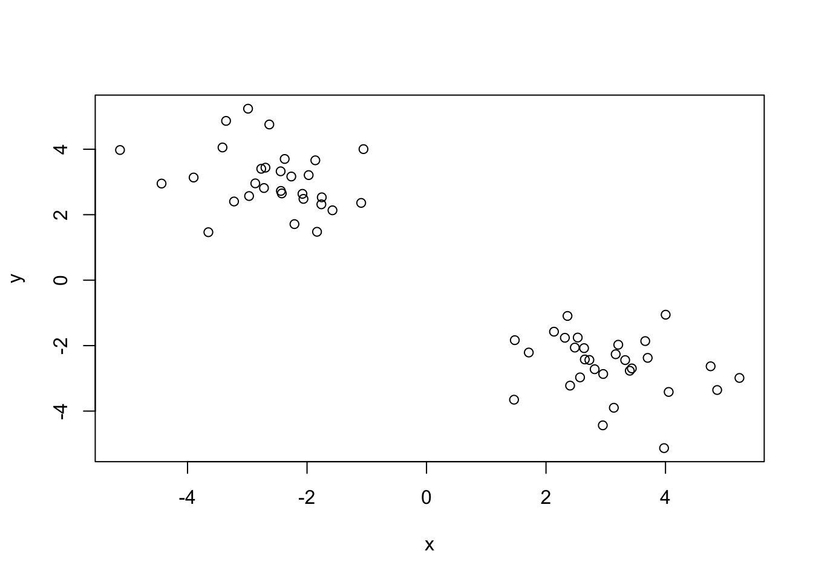
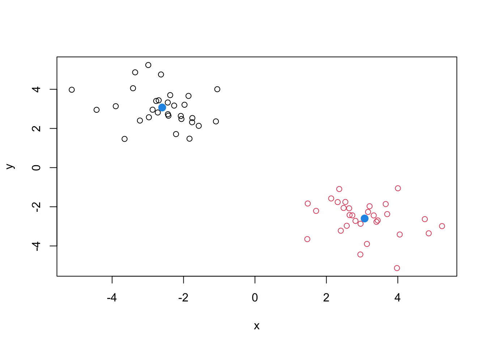
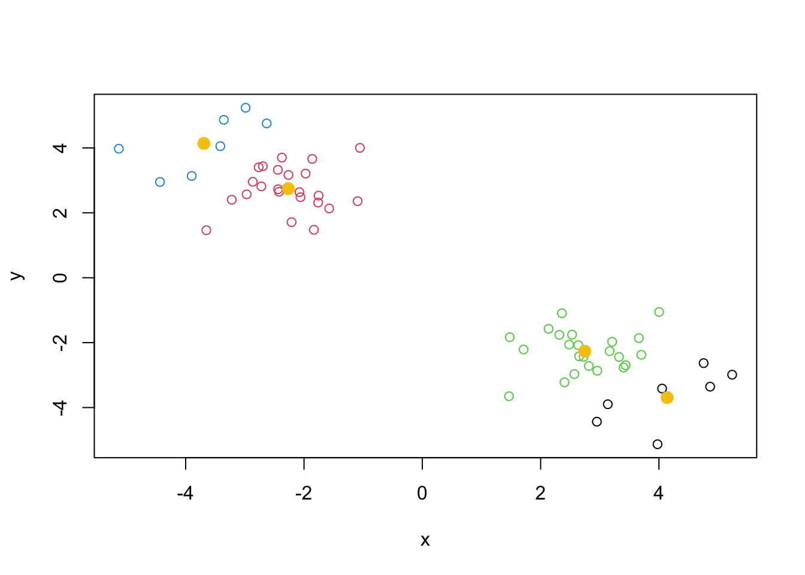
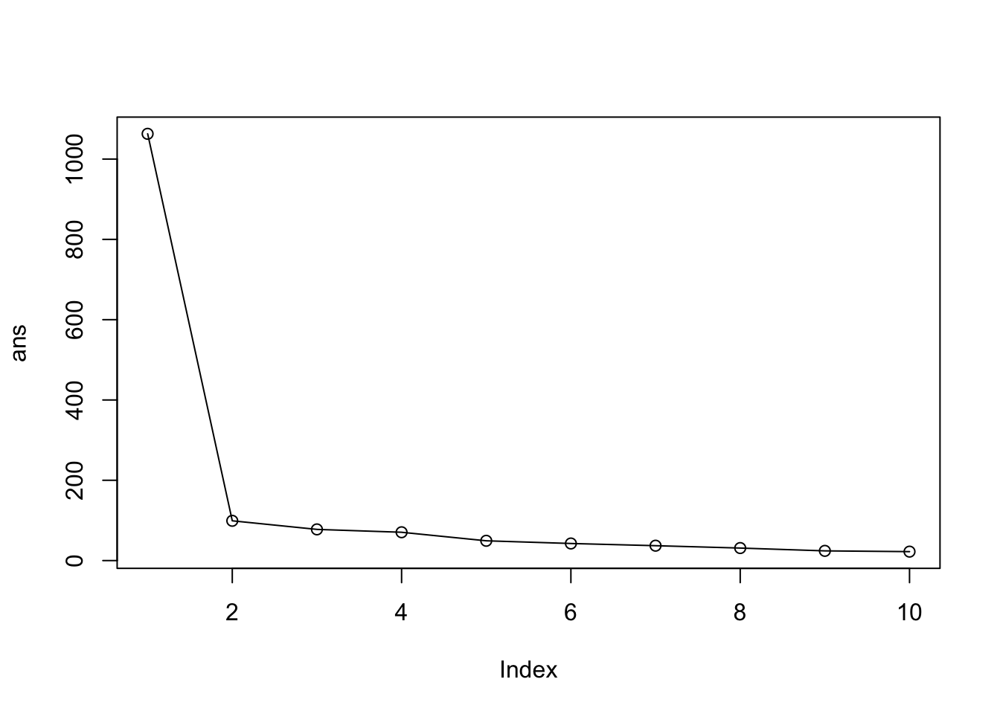
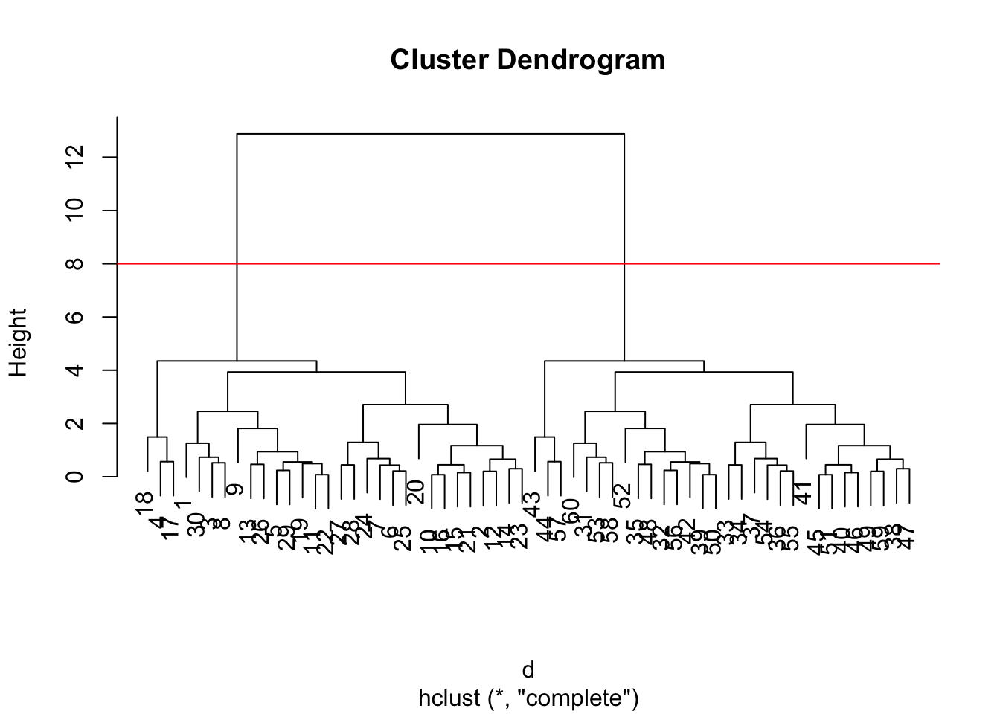
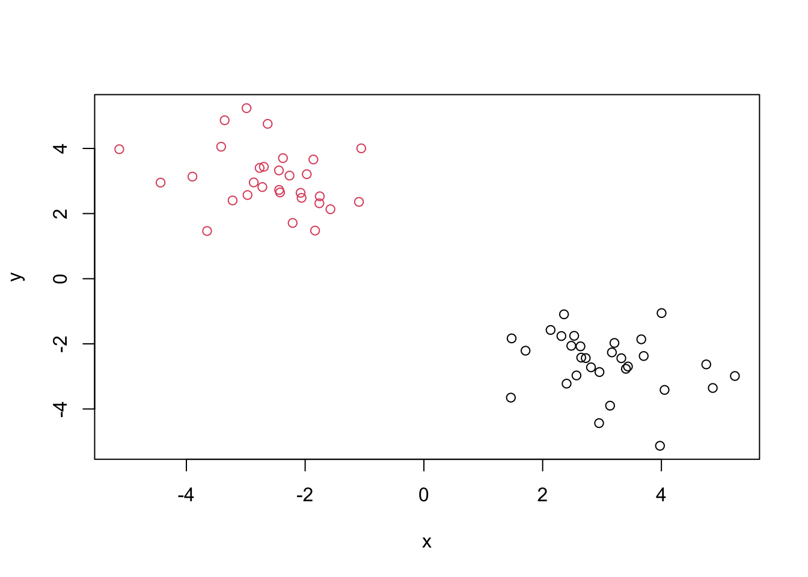
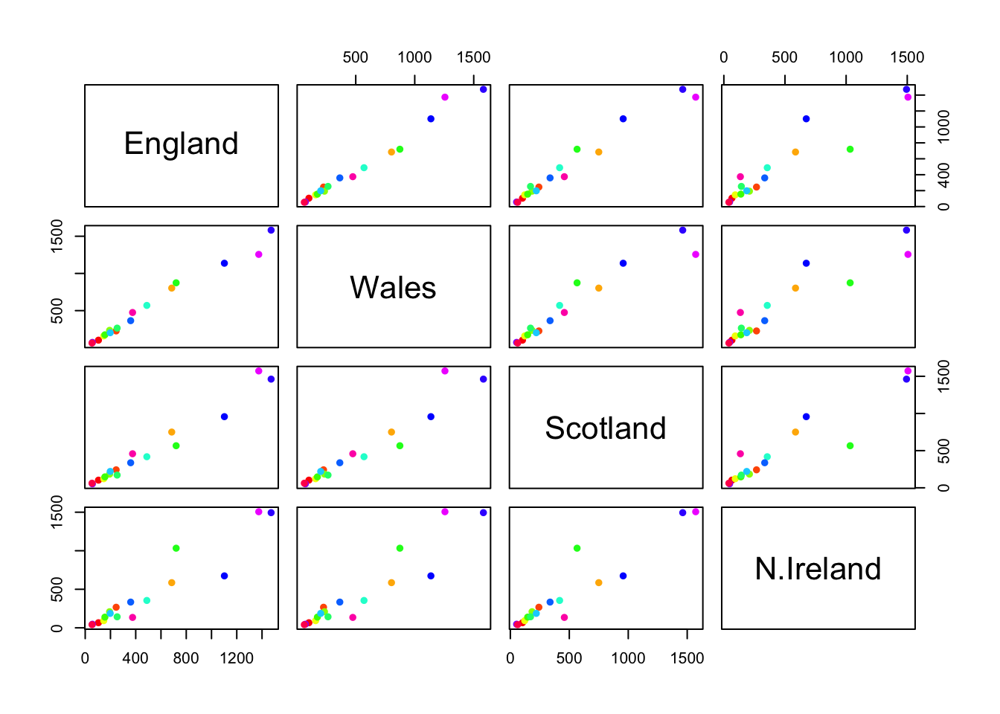
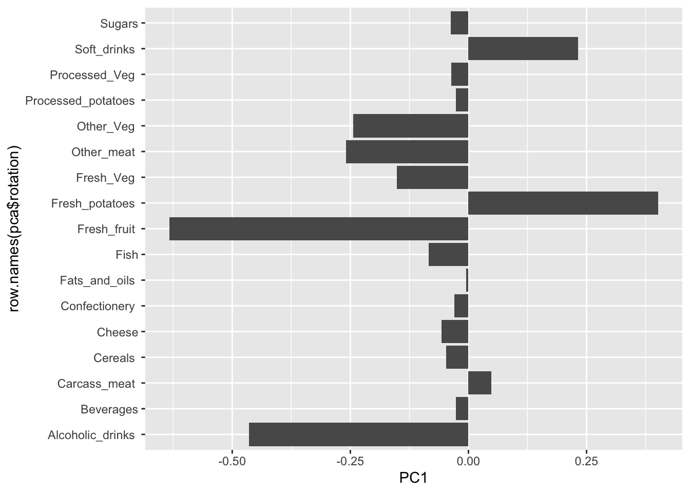

rnorm(10) [1] 0.5491678 1.0481602 2.3974053 -0.5234597 1.1002304 0.4704913
[7] -1.2340199 0.4778254 -1.3456915 1.7655619Today we explore some unsupervised machine learning techniques that are very popular in bioinformatics, including clustering and dimentionality reduction methods.
The main funciotn in “base R” for K-means is called kmeans().
Before going deep lets’s make up some data to cluster where we know what the answer should be. For this we can use the rnorm().
rnorm(10) [1] 0.5491678 1.0481602 2.3974053 -0.5234597 1.1002304 0.4704913
[7] -1.2340199 0.4778254 -1.3456915 1.7655619hist(rnorm(10000))
x <- c( rnorm(30, mean=3),
rnorm(30, mean=-3) )
x [1] 4.053289 2.956941 5.237731 2.950727 3.325089 2.315912 2.133624
[8] 4.865137 4.002917 2.649539 3.402060 2.814311 3.209087 2.569761
[15] 2.482344 2.725962 3.135424 3.976018 3.701910 1.464953 2.637096
[22] 3.436525 2.403183 2.359847 2.530754 3.660852 1.711811 1.477507
[29] 3.166401 4.755473 -2.631269 -2.262989 -1.832902 -2.210534 -1.861167
[36] -1.753388 -1.093606 -3.221679 -2.695814 -2.076751 -3.651329 -2.373780
[43] -5.130335 -3.898200 -2.437773 -2.059731 -2.970086 -1.972757 -2.720675
[50] -2.766625 -2.422495 -1.055237 -3.355422 -1.574193 -1.760147 -2.441719
[57] -4.434957 -2.987095 -2.866107 -3.414664z <- cbind(x=x, y=rev(x))
head(z) x y
[1,] 4.053289 -3.414664
[2,] 2.956941 -2.866107
[3,] 5.237731 -2.987095
[4,] 2.950727 -4.434957
[5,] 3.325089 -2.441719
[6,] 2.315912 -1.760147plot(z)
Reminder on how to find out what you need for a new function:
?kmeans()Now let’s use it
k <- kmeans(z, centers=2)
kK-means clustering with 2 clusters of sizes 30, 30
Cluster means:
x y
1 -2.597781 3.070406
2 3.070406 -2.597781
Clustering vector:
[1] 2 2 2 2 2 2 2 2 2 2 2 2 2 2 2 2 2 2 2 2 2 2 2 2 2 2 2 2 2 2 1 1 1 1 1 1 1 1
[39] 1 1 1 1 1 1 1 1 1 1 1 1 1 1 1 1 1 1 1 1 1 1
Within cluster sum of squares by cluster:
[1] 49.53776 49.53776
(between_SS / total_SS = 90.7 %)
Available components:
[1] "cluster" "centers" "totss" "withinss" "tot.withinss"
[6] "betweenss" "size" "iter" "ifault" This list of “available componants” are saved in a list that you can access via
k$[wvr componant you want]
k$cluster [1] 2 2 2 2 2 2 2 2 2 2 2 2 2 2 2 2 2 2 2 2 2 2 2 2 2 2 2 2 2 2 1 1 1 1 1 1 1 1
[39] 1 1 1 1 1 1 1 1 1 1 1 1 1 1 1 1 1 1 1 1 1 1plot(z, col=k$cluster)
points(k$centers, col=4, pch=16, cex=1.5)
kmeans() again and cluster into 4 groups and show the results in a figure like above.k2 <- kmeans(z, centers=4)
plot(z, col=k2$cluster)
points(k2$centers, col=7, pch=16, cex=1.5)
kmeans() with different values of centers between 1 and 10.ans <- NULL
#null just means the variable exists but theres nothing in it
for(i in 1:10) {
#cat(i, "\n")
k <- kmeans(z, centers = i)
ans <- c(ans, k$tot.withinss)
}ans [1] 1062.92582 99.07552 77.69262 70.54540 49.29977 42.56574
[7] 37.08885 31.19542 24.18574 22.27780plot(ans, type="o")
The main function for heirarchical clustering in base R is called hclust().
This function does not take our “raw” data directly, rather you must provide it with a “distance matrix” computed from your data.
d <- dist(z)
hc <- hclust(d)
hc
Call:
hclust(d = d)
Cluster method : complete
Distance : euclidean
Number of objects: 60 There is a specific plot method for hc results:
plot(hc)
abline(h=8, col="red")
We can “cut” our tree at a given height to yield groupings (i.e. clusters). In r we do this with cutree()
cutree(hc, h=8) [1] 1 1 1 1 1 1 1 1 1 1 1 1 1 1 1 1 1 1 1 1 1 1 1 1 1 1 1 1 1 1 2 2 2 2 2 2 2 2
[39] 2 2 2 2 2 2 2 2 2 2 2 2 2 2 2 2 2 2 2 2 2 2We can also run cutree() with k=2 instead of a give h= height value.
grps <- cutree(hc, k=2)
grps [1] 1 1 1 1 1 1 1 1 1 1 1 1 1 1 1 1 1 1 1 1 1 1 1 1 1 1 1 1 1 1 2 2 2 2 2 2 2 2
[39] 2 2 2 2 2 2 2 2 2 2 2 2 2 2 2 2 2 2 2 2 2 2z colored by our Hierarchical Clustering results.plot(z, col=grps)
Here we play with some silly data on the unhealthy eating habits of ppl from the UK.
This is copied from the lab on the coursewebsite, but edited with the
row.names=1bit
url <- "https://tinyurl.com/UK-foods"
x <- read.csv(url, row.names = 1)
x England Wales Scotland N.Ireland
Cheese 105 103 103 66
Carcass_meat 245 227 242 267
Other_meat 685 803 750 586
Fish 147 160 122 93
Fats_and_oils 193 235 184 209
Sugars 156 175 147 139
Fresh_potatoes 720 874 566 1033
Fresh_Veg 253 265 171 143
Other_Veg 488 570 418 355
Processed_potatoes 198 203 220 187
Processed_Veg 360 365 337 334
Fresh_fruit 1102 1137 957 674
Cereals 1472 1582 1462 1494
Beverages 57 73 53 47
Soft_drinks 1374 1256 1572 1506
Alcoholic_drinks 375 475 458 135
Confectionery 54 64 62 41barplot(as.matrix(x), beside=T, col=rainbow(nrow(x)))
A plot that is useful is the pairs plot (for pairwise comparisons):
pairs(x, col=rainbow(nrow(x)), pch=16)
library(pheatmap)
pheatmap( as.matrix(x) )
These are all kinda booty, finding relationships in out data is hard and be need something better.
The main function in base r is called prcomp().
For this function we will want to take the transpose of our data so we analyze the foods.
# t(x) makes the foods the columns instead of the countries
pca <- prcomp(t(x))We can see how well our pca PCs are doing:
summary(pca)Importance of components:
PC1 PC2 PC3 PC4
Standard deviation 324.1502 212.7478 73.87622 2.921e-14
Proportion of Variance 0.6744 0.2905 0.03503 0.000e+00
Cumulative Proportion 0.6744 0.9650 1.00000 1.000e+00bc the proportion of variance is like almost 100% within the first 2 PCs means that nearly all the variance in this dataset can be captured on only two axes.
Lets graph it, so lets call ggplot bc we miss ggplot so much.
library(ggplot2)Our main PC plot results figure:
ggplot(pca$x) +
aes(PC1, PC2) +
geom_point(col=c("orange", "red", "blue", "darkgreen"))
The final plot is called a loadings plot: how the original variables contribute to the PC1.
ggplot(pca$rotation) +
aes(PC1, row.names(pca$rotation)) +
geom_col()